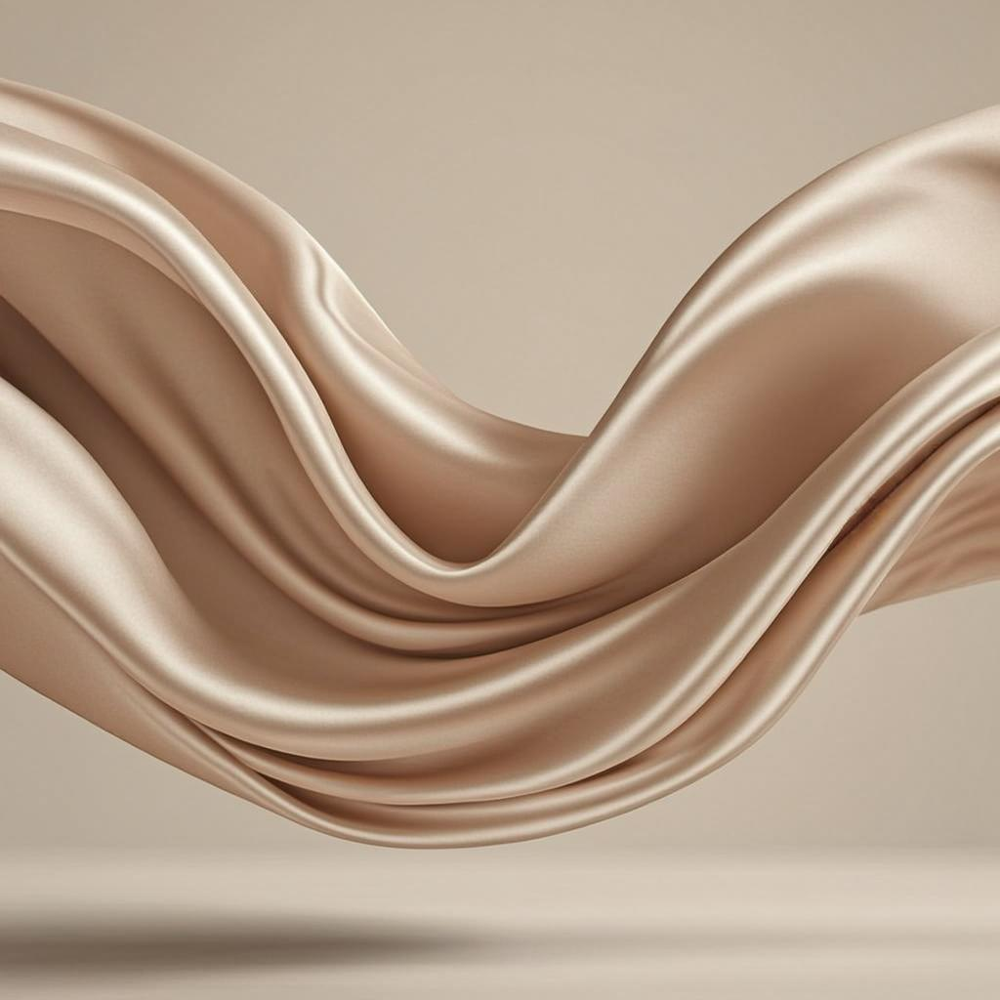

Mommy Makeover Consultation in Lucknow
Mommy makeover refers to a personalised combination of cosmetic procedures that may address selected body changes following pregnancy. The procedures, timing and suitability depend on individual health and goals.

Introduction
A mommy makeover is not a single procedure — it refers to a personalised combination of cosmetic procedures selected to address body changes that may follow pregnancy and breastfeeding. Common concerns include abdominal laxity, separated abdominal muscles, excess abdominal skin, breast volume loss or sagging, and localised fat deposits. The specific procedures considered are tailored to the individual, and may include abdominoplasty (tummy tuck), breast surgery, liposuction, or a combination. Suitability depends on multiple factors including overall health, the time elapsed since pregnancy, future family plans and individual anatomy.
Who May Be Suitable
A mommy makeover consultation may be appropriate for individuals who:
- Have completed their family and are not planning future pregnancies.
- Are at a stable weight and in good general health.
- Have specific concerns related to post-pregnancy body changes.
- Have realistic expectations about outcomes and recovery.
- Do not smoke, or are willing to stop smoking before and after procedures.
Consultation and Assessment Process
Your consultation with Dr. Brajesh Pathak includes a detailed review of your medical history, pregnancy history, current medications and lifestyle factors. The specific concerns you have are discussed, and an examination is conducted to assess the relevant anatomy. Dr. Pathak explains the procedures that may be appropriate, whether they can be combined or should be staged, and the implications for recovery and outcomes. If a mommy makeover is suitable, a personalised plan is prepared. If certain procedures are not appropriate, this is explained.
Procedure Overview
Where a mommy makeover is undertaken, the specific procedures performed depend on the individual plan. This may include abdominoplasty to address abdominal skin and muscle laxity, breast surgery to address volume or position, liposuction for localised fat, or other selected procedures. Procedures may be performed in a single session or staged across multiple sessions, depending on safety considerations, the combination chosen and individual factors. Specific procedural details, anaesthesia and facility considerations are explained during your consultation.
Recovery Information
Recovery after a mommy makeover depends on the specific procedures performed and whether they were combined or staged. Swelling, bruising and discomfort are common and typically settle over the following weeks. Compression garments and supportive care are usually recommended. Detailed post-procedure care instructions are provided, including activity restrictions, wound care and follow-up appointments. Recovery from combined procedures is typically longer than from a single procedure, and realistic timelines are discussed during consultation. Individual recovery varies.
Possible Risks and Limitations
As with any surgical procedure, mommy makeover procedures carry potential risks, which may include:
- Bleeding, infection or delayed healing.
- Adverse reaction to anaesthesia.
- Asymmetry, irregular contours or suboptimal scarring.
- Changes in skin or nipple sensation, which may be temporary or prolonged.
- Need for additional procedures to refine results.
- Risks specific to each individual procedure included in the plan.
- Future pregnancy may affect results — discussed during consultation.
Medical Disclaimer: The information on this page is general in nature and does not constitute medical advice or a guarantee of outcome. Suitability, risks and expected results vary between individuals and must be assessed in a personal consultation with Dr. Brajesh Pathak. Read the full medical disclaimer.